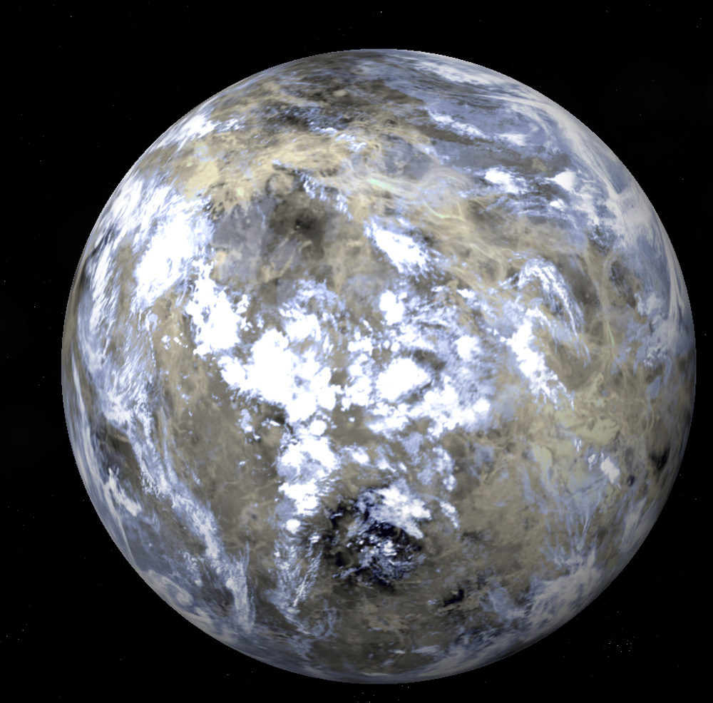

Ceres adalah sebuah planet kerdil yang terletak di Sabuk Asteroid. Ceres ditemukan pada 1 Januari 1801 oleh Giuseppe Piazzi. Awalnya saat ditemukan Ceres dianggap sebagai sebuah planet, namun setengah abad kemudian dan selama 150 tahun selanjutnya, Ceres diklasifikasikan sebagai sebuah asteroid. Pada 24 Agustus 2006, Persatuan Astronomi Internasional memutuskan untuk mengubah status Ceres menjadi “planet katai”. Ceres mempunyai massa sebesar 9,45 ± 0,04 × 1020 kg. Dengan diameter sekitar 950 km, Ceres adalah benda angkasa terbesar di sabuk asteroid utama.